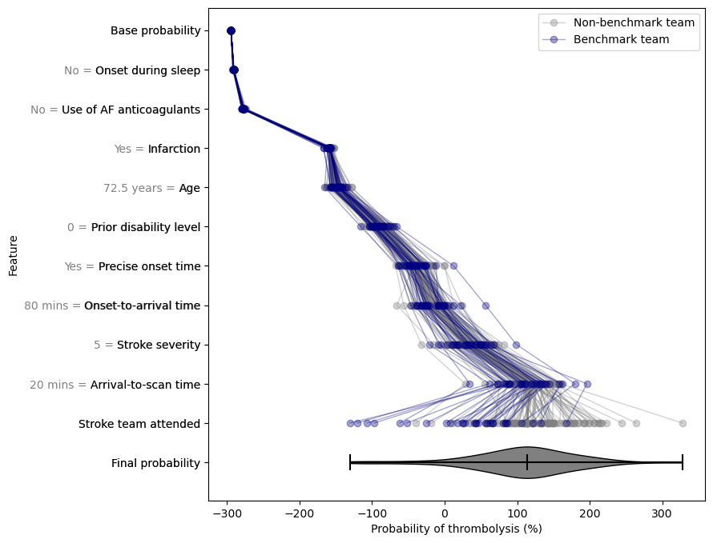

Combined SHAP probability waterfall for all teams
Contents
Combined SHAP probability waterfall for all teams#
Create a plot that contains a SHAP probability waterfall for each team separately, but all on the same axis. There’s not much room for bars so we plot lines and markers instead.
# Imports:
import pandas as pd
import numpy as np
import pickle
import matplotlib.pyplot as plt
Set artificial patient feature values, and team(s) to highlight#
Change these patient details and highlighted team names.
# Select patient details
patient_dict = dict(
arrival_to_scan_time= 20, # minutes
infarction = 1, # 0=no, 1=yes
stroke_severity = 5, # 0 to 42
onset_time_precise = 1, # 0=no, 1=yes
prior_disability = 0, # 0 to 6
anticoag = 0, # 0=no, 1=yes
onset_to_arrival_time = 80, # minutes
onset_during_sleep = 0, # 0=no, 1=yes
age = 72.5 # years
)
Formatting for team types#
# Chart labels for teams generally:
plain_str = 'Non-benchmark team'
bench_str = 'Benchmark team'
highlight_and_bench_extra_str = ' \U00002605' # Add star
# Choose teams to highlight:
highlighted_teams_input = [] # Team example: 'VUHVS8909F'
# Can specify colours in here for highlighted teams.
# If not specified, default matplotlib colours are used.
highlighted_teams_colours = {
plain_str: 'grey',
bench_str: 'navy'
}
Build the data arrays#
# Import list of stroke team names from file:
stroke_teams_list = pd.read_csv('./synthetic/stroke_teams.csv')
stroke_teams_list = stroke_teams_list.values.ravel()
# Build the patient details into a 2D array
# with one row for each stroke team.
# Patient feature names (for DatFrame column names)
headers = np.array([
'Arrival-to-scan time',
'Infarction',
'Stroke severity',
'Precise onset time',
'Prior disability level',
'Stroke team',
'Use of AF anticoagulants',
'Onset-to-arrival time',
'Onset during sleep',
'Age'
])
# First build a 2D array where each row is the patient details.
# Set patient feature values
row = np.array([
patient_dict['arrival_to_scan_time'],
patient_dict['infarction'],
patient_dict['stroke_severity'],
patient_dict['onset_time_precise'],
patient_dict['prior_disability'],
'temp', # Stroke team
patient_dict['anticoag'],
patient_dict['onset_to_arrival_time'],
patient_dict['onset_during_sleep'],
patient_dict['age']
], dtype=object)
# Repeat these identical row values for the number of stroke teams:
table = np.tile(row, len(stroke_teams_list))
# Reshape to a 2D array:
table = table.reshape(len(stroke_teams_list), len(headers))
# Update the "Stroke team" column with the names:
table[:, 5] = stroke_teams_list
# Turn this array into a DataFrame with labelled columns.
synthetic = pd.DataFrame(table, columns=headers)
# Make a copy of this data that is ready for the model.
# The same data except the Stroke Team column is one-hot-encoded.
# One-hot encode hospitals
# Keep copy of original, with 'Stroke team' not one-hot encoded
X = synthetic.copy(deep=True)
# One-hot encode 'Stroke team'
X_hosp = pd.get_dummies(X['Stroke team'], prefix='team')
X = pd.concat([X, X_hosp], axis=1)
X.drop('Stroke team', axis=1, inplace=True)
# Store the column names:
headers_X = tuple(X.columns)
Extra formatting to show up benchmark and highlighted teams on the plot:
# Import benchmark data
filename= './output/04_xgb_10_features_10k_cohort_thrombolysis_rate_by_hosp.csv'
benchmark_df = pd.read_csv(filename)
benchmark_df.sort_values('Thrombolysis rate', inplace=True)
# Add an index row to rank the teams:
benchmark_df['Rank'] = \
np.arange(1, len(benchmark_df['stroke_team'])+1)
# Make list of benchmark rank:
# (original data is sorted alphabetically by stroke team)
benchmark_rank_list = benchmark_df.sort_values('stroke_team')['Rank'].to_numpy()
# Indices of benchmark data at the moment:
inds_benchmark = np.where(benchmark_rank_list <= 30)[0]
# Highlighted list:
# Make a column of all teams where highlighted teams are listed by name
# and other teams are just called '-'.
highlighted_teams_list = np.array(
['-' for team in stroke_teams_list], dtype=object)
# Combo highlighted and benchmark:
hb_teams_list = np.array(
[plain_str for team in stroke_teams_list], dtype=object)
# Mark the benchmark teams:
hb_teams_list[inds_benchmark] = bench_str
# Keep unique entries in here:
hb_teams_input = [plain_str, bench_str]
for team in highlighted_teams_input:
ind_t = np.argwhere(stroke_teams_list == team)[0][0]
# Update the highlighted teams list:
highlighted_teams_list[ind_t] = team
# Update the combo highlighted-benchmark list:
if ind_t in inds_benchmark:
# If it's a benchmark as well, add an extra bit:
team = team + highlight_and_bench_extra_str
hb_teams_list[ind_t] = team
hb_teams_input.append(team)
Get predictions of use of probability of thrombolysis for each team#
# Load the XGBoost model that was trained on the 10k cohort train/test dataset (in notebook 04)
filename = ('./saved_models/04_xgb_10_features_10k_cohort.p')
with open(filename, 'rb') as filehandler:
model = pickle.load(filehandler)
/home/michael/miniconda3/envs/samuel/lib/python3.8/site-packages/xgboost/compat.py:36: FutureWarning: pandas.Int64Index is deprecated and will be removed from pandas in a future version. Use pandas.Index with the appropriate dtype instead.
from pandas import MultiIndex, Int64Index
# Predict treatment
probs_list = model.predict_proba(X)[:, 1]
# Put everything into a DataFrame:
results = pd.DataFrame()
results['Stroke team'] = stroke_teams_list
results['Highlighted team'] = highlighted_teams_list
results['Benchmark rank'] = benchmark_rank_list
results['HB team'] = hb_teams_list
results['Probability'] = probs_list
results['Probability_perc'] = probs_list*100.0
results['Thrombolyse'] = probs_list >= 0.5
results['Index'] = np.arange(len(results))
sorted_results = results.\
sort_values('Probability', ascending=False)
# Add column of sorted index:
sorted_results['Sorted rank'] = np.arange(1, len(results) + 1)
# Add column of str to print when thrombolysed or not
thrombolyse_str = np.full(len(sorted_results), 'No ')
thrombolyse_str[np.where(sorted_results['Thrombolyse'])] = 'Yes'
sorted_results['Thrombolyse_str'] = thrombolyse_str
Get SHAP values for predictions#
Use a previously saved SHAP explainer model (from notebook 04_compare_10k_cohort_key_features.ipynb).
# Load SHAP explainers
filename = ('./output/04_xgb_10_features_10k_cohort_shap_explainer_object.p')
with open(filename, 'rb') as filehandler:
explainer = pickle.load(filehandler)
filename = ('./output/04_xgb_10_features_10k_cohort_shap_explainer_probability_object.p')
with open(filename, 'rb') as filehandler:
explainer_probability = pickle.load(filehandler)
# Get Shapley values along with base and features
shap_values_probability_extended = explainer_probability(X)
# Shap values exist for each classification in a Tree
shap_values_probability = shap_values_probability_extended.values
# Find the starting probability:
start_prob = shap_values_probability_extended[0].base_values
start_prob_perc = 100.0 * start_prob
start_prob
-2.9453680704506406
Sort data for plotting#
# Re-name all shap probability shifts:
grid = np.transpose(shap_values_probability)
# Expect most of the mismatched one-hot-encoded hospitals to make
# only a tiny contribution to the SHAP. Moosh them down into one
# column instead.
# Have 9 features other than teams. Index 9 is the first team.
ind_first_team = 9
# This many stroke teams:
n_teams = shap_values_probability.shape[0]
# Make a new grid of size (number of non-team features) + 2,
# where the two extras are for "this team only" and "all other teams".
grid_cat = np.zeros((ind_first_team + 1, n_teams))
# Copy over most of the values:
grid_cat[:ind_first_team, :] = grid[:ind_first_team, :]
# For the remaining column, loop over to pick out the value:
for i, sorted_ind in enumerate(sorted_results['Index']):
row = i + ind_first_team
# Combine all of the one-hot team values into here:
grid_cat[ind_first_team, i] = np.sum(grid[ind_first_team:, i])
# Multiply values by 100 to get probability in percent:
grid_cat *= 100.0
# Sort the teams into the same order as sorted_results:
grid_cat_sorted = grid_cat[:, sorted_results['Index']]
# Keep a copy of the new column headings with condensed teams
headers_waterfall = np.append(headers_X[:9], 'Stroke team attended')
# headers_waterfall = np.append(headers_waterfall, 'Stroke teams not attended')
# Pull out the feature values:
patient_data_waterfall = X.iloc[0][:9].to_numpy()
# Add empty value for stroke team attended:
patient_data_waterfall = np.append(patient_data_waterfall, '')
# Find which values are 0/1 choice and can be changed to no/yes:
features_yn = [
'Infarction',
'Precise onset time',
'Use of AF anticoagulants',
'Onset during sleep',
]
for feature in features_yn:
i = np.where(headers_waterfall == feature)[0]
patient_data_waterfall[i] = 'Yes' if patient_data_waterfall[i] > 0 else 'No'
Note:
To access all of the shifts for feature 0:
grid_cat_sorted[0, :]
To access all of the shifts for team 0:
grid_cat_sorted[:, 0]
# Sort the grids by increasing standard deviation in the shifts for each feature.
grid_waterfall = np.copy(grid_cat_sorted)
# Sort the grid in order of increasing standard deviation:
inds_std = np.argsort(np.std(grid_waterfall, axis=1))
grid_waterfall = grid_waterfall[inds_std, :]
features_waterfall = headers_waterfall[inds_std]
patient_data_waterfall = patient_data_waterfall[inds_std]
# Add a row for the starting probability:
grid_waterfall = np.vstack(
(np.zeros(grid_waterfall.shape[1]), grid_waterfall))
# Make a cumulative probability line for each team:
grid_waterfall_cumsum = np.cumsum(grid_waterfall, axis=0)
# Add the starting probability to all values:
grid_waterfall_cumsum += start_prob_perc
# Keep final probabilities separate:
final_probs_list = grid_waterfall_cumsum[-1, :]
# Feature names:
features_waterfall = np.append('Base probability', features_waterfall)
features_waterfall = np.append(features_waterfall, 'Final probability')
# Feature values:
patient_data_waterfall = np.append('', patient_data_waterfall)
patient_data_waterfall = np.append(patient_data_waterfall, '')
# Combine feature names and values for tick labels:
# (same idea as the original shap red/blue waterfall plot)
features_with_values_waterfall = []
for i, value in enumerate(patient_data_waterfall):
if value != '':
value = str(value)
if 'rrival' in features_waterfall[i]:
# Onset to arrival or arrival to scan time:
value += ' mins'
elif 'Age' in features_waterfall[i]:
value += ' years'
# If it's not a dummy feature value, add an equals sign:
value += ' = '
# Combine the value and the feature name:
feature_with_value = value + features_waterfall[i]
features_with_values_waterfall.append(feature_with_value)
Plot the combined waterfall#
y_vals = np.arange(0, -len(features_waterfall), -1)
# Only draw the plain and benchmark lines in the legend once.
# Use these to keep track of whether they've been drawn or not:
drawn_blank_legend_line = 0
drawn_bench_legend_line = 0
fig, ax = plt.subplots(figsize=(5,8))
for i, team in enumerate(sorted_results['Stroke team']):
if team == sorted_results['Highlighted team'].iloc[i]:
# Highlighted team
legend_name = sorted_results['HB team'].iloc[i]
opacity = 1.0
width = 2.0
zorder = 3 # Draw at the top
else:
if sorted_results['HB team'].iloc[i] == plain_str:
# Plain team
zorder = 1 # Draw on the bottom
if drawn_blank_legend_line > 0:
# Don't put this in the legend
legend_name = None
else:
# Put this in the legend
legend_name = plain_str
drawn_blank_legend_line += 1
else:
# Benchmark team
zorder = 2 # Draw in the middle
if drawn_bench_legend_line > 0:
# Don't put this in the legend
legend_name = None
else:
# Put this in the legend
legend_name = bench_str #sorted_results['HB team'].iloc[i]
drawn_bench_legend_line += 1
opacity = 0.35
width = 1.0
try:
colour = highlighted_teams_colours[sorted_results['HB team'].iloc[i]]
except KeyError:
colour = None
# Plot
ax.plot(grid_waterfall_cumsum[:, i], y_vals[:-1], marker='o',
alpha=opacity, color=colour, linewidth=width,
label=legend_name, zorder=zorder)
# Violin plot
v_dict = ax.violinplot(
final_probs_list,
vert=False, # Horizontal box plot
positions=[y_vals[-1]], # Position on y-axis
widths=0.8, # Max height of the violin
showextrema=True, # Add whiskers at ends
showmedians=True # Add whisker at median
)
# Update style:
# Reset default transparency
# (including filled shape outline transparency)
v_dict['bodies'][0].set_alpha(1.0)
# Colour of the filled shape:
v_dict['bodies'][0].set_facecolor('grey')
v_dict['bodies'][0].set_edgecolor('k')
# Colour of the lines:
linecollections = ['cmins', 'cmaxes', 'cbars', 'cmedians']
for lc in linecollections:
v_dict[lc].set_edgecolor('k')
# Axis formatting:
# Make twice as many y tick locations as we need, slightly offset:
yticks = np.append(y_vals, y_vals + 1e-7)
# Give the first half of the ticks the full labels,
# and the second half just the feature names:
yticklabels = np.append(features_with_values_waterfall, features_waterfall)
ax.set_yticks(yticks)
ax.set_yticklabels(yticklabels)
# Change the colour of the first half of the drawn ticks:
yticklabels_drawn = plt.gca().get_yticklabels()
for i in range(len(y_vals)):
yticklabels_drawn[i].set_color('grey')
ax.set_ylabel('Feature')
ax.set_xlabel('Probability of thrombolysis (%)')
ax.legend()
plt.savefig('./output/21_shap_waterfall_with_violin.jpg', dpi=300, bbox_inches='tight')
plt.show()
